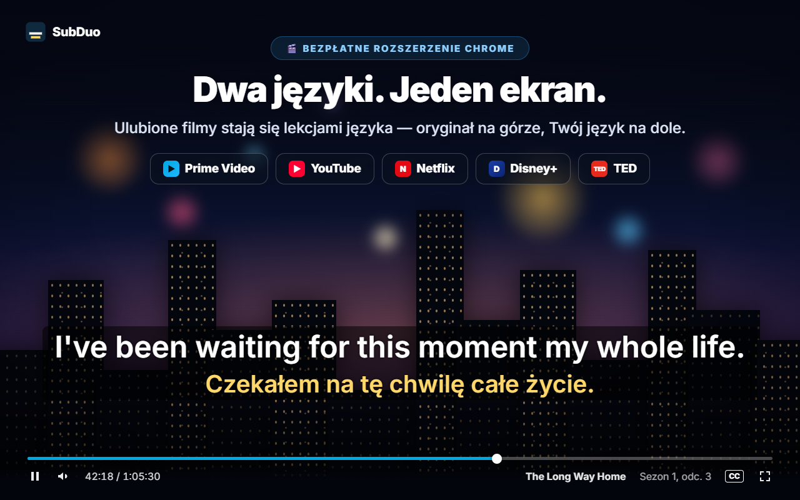
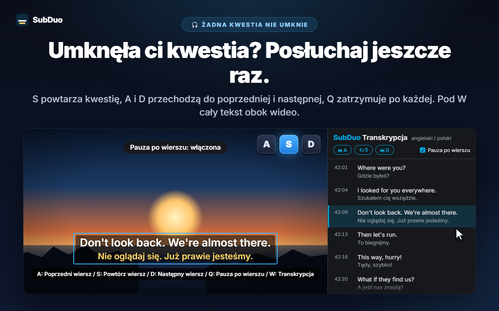
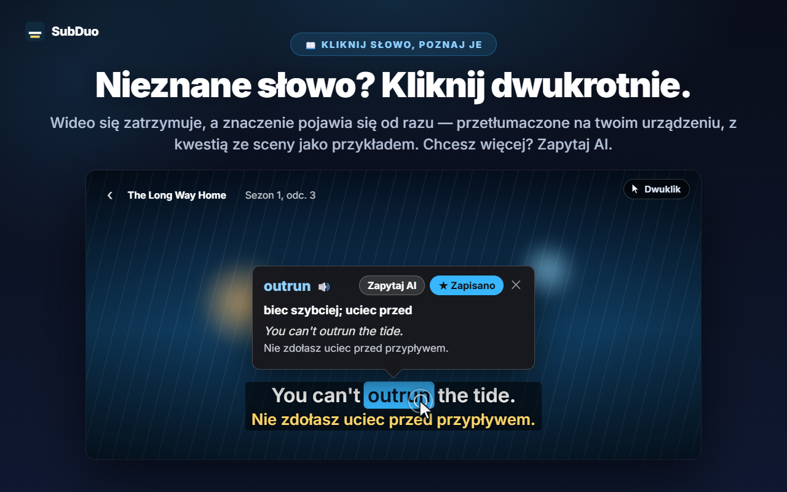
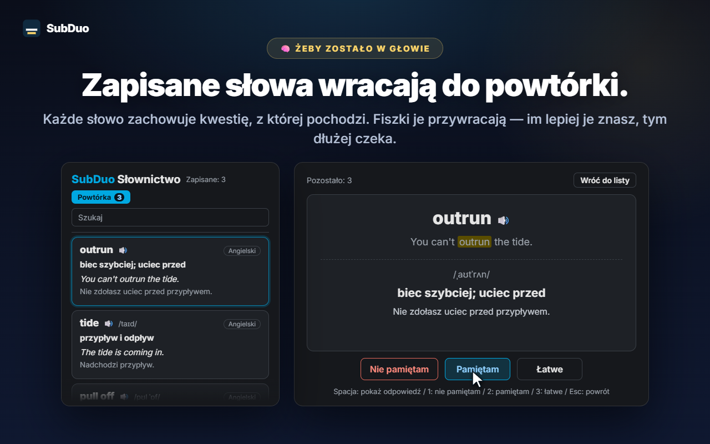

Dowolne dwa języki napisów
Każda ścieżka udostępniana przez witrynę jest wykrywana po rozpoczęciu odtwarzania, także automatycznie generowane napisy YouTube. Wybierz język dla każdego wiersza albo ukryj jeden z nich.
SubDuo wyświetla napisy w dwóch językach jednocześnie — oryginał na górze, Twój język na dole. Kliknij dwukrotnie słowo, aby poznać jego znaczenie, powtórz kwestię jednym klawiszem i zachowaj nowe słowa na wbudowanej liście słownictwa.
Korzysta z napisów, które udostępnia witryna · Bez konta · Napisy zostają w Twojej przeglądarce
Odtwarzacze serwisów streamingowych pokazują napisy tylko w jednym języku naraz. SubDuo dodaje drugi — i narzędzia, dzięki którym się z niego uczysz.
Ekrany rozszerzenia w Twoim języku.

Wybierz dowolne dwie ścieżki napisów dostępne dla tytułu — oryginał na górze, Twój język na dole. Przeciągnij napisy w dowolne miejsce, przewiń kółkiem nad wierszem, aby zmienić jego rozmiar, i kliknij prawym przyciskiem, aby zmienić kolory, przezroczystość lub rozmycie.

Naciśnij S, aby powtórzyć wiersz, A i D, aby cofnąć się lub przejść dalej, oraz Q, aby włączyć pauzę po każdym wierszu. Klawisz W otwiera transkrypcję w panelu bocznym Chrome — oba języki, wiersz po wierszu — a kliknięcie wiersza przenosi do tego miejsca.

Film się zatrzymuje, a karta od razu pokazuje znaczenie — przetłumaczone na Twoim urządzeniu przez wbudowanego tłumacza Chrome, z kwestią ze sceny jako przykładem. Alt+przeciągnięcie zaznacza zwrot. Naciśnij „Zapytaj AI”, aby poznać znaczenie w kontekście, wymowę i przykładowe zdanie.

Każde zapisane słowo zachowuje kwestię, z której pochodzi. Przeszukuj i filtruj swoje słownictwo, odtwarzaj wymowę i powtarzaj z fiszkami — im lepiej znasz słowo, tym dłużej czeka na kolejną powtórkę.
Bez konta i bez ekranów konfiguracji. Zainstaluj i włącz film.
Zainstaluj SubDuo z Chrome Web Store, a potem włącz film w Prime Video, YouTube, Netflix, Disney+ lub TED.
Kliknij ikonę SubDuo i wybierz jeden język napisów dla górnego wiersza i jeden dla dolnego. Na liście są tylko ścieżki dostępne dla danego tytułu.
Klikaj dwukrotnie słowa, aby je sprawdzić, naciskaj A, S lub D, aby powtarzać kwestie, a listę słownictwa otwieraj z okna rozszerzenia.
Dla tych, którzy uczą się, oglądając — i chcą, żeby napisy nie przeszkadzały, dopóki nie są potrzebne.
Każda ścieżka udostępniana przez witrynę jest wykrywana po rozpoczęciu odtwarzania, także automatycznie generowane napisy YouTube. Wybierz język dla każdego wiersza albo ukryj jeden z nich.
Kliknij słowo dwukrotnie lub z klawiszem Alt albo zaznacz zwrot przez Alt+przeciągnięcie. Odtwarzanie się zatrzymuje, a tłumaczenie wykonane na Twoim urządzeniu pojawia się na filmie.
Znaczenie w kontekście, wymowa i przykładowe zdanie w wybranym języku interfejsu. Do 20 wyjaśnień dziennie za darmo.
Zapisuj słowa jednym kliknięciem, wyszukuj je, filtruj według języka i słuchaj wymowy 🔊. Fiszki pokazują dobrze znane słowa coraz rzadziej.
A — poprzedni wiersz, S — powtórka, D — następny. Q zatrzymuje po każdym wierszu. Rozmyj jeden wiersz, aby się sprawdzić, a potem najedź na niego kursorem, by zobaczyć odpowiedź.
Wszystkie kwestie w obu językach obok filmu. Bieżący wiersz jest podświetlony; kliknij dowolny, aby do niego przejść. Otwierasz ją klawiszem W.
Przeciągnij, aby przesunąć, przewiń, aby zmienić rozmiar wiersza, użyj strzałek do drobnych poprawek, wyrównaj do lewej, do środka lub do prawej. Prawy przycisk: kolor, przezroczystość i rozmycie dla każdego wiersza.
Duże napisy na YouTube, dyskretne na Netflix — ustawienia są zapisywane osobno dla każdej witryny i synchronizowane przez Twoje Chrome.
Menu, tłumaczenia i wyjaśnienia AI są w wybranym języku interfejsu, który może się różnić od języka Chrome.
SubDuo odczytuje pliki napisów, które witryna i tak przesyła do Twojej przeglądarki, i wyświetla je właśnie tam. Na zewnątrz trafia tylko zwrot, o który zdecydujesz się zapytać AI, wraz z jego wierszem napisów.
Napisy są przetwarzane i wyświetlane w przeglądarce. Ustawienia, słownictwo i historia oglądania nie są przesyłane deweloperowi. Słowa tłumaczy na Twoim urządzeniu wbudowany tłumacz Chrome.
Gdy naciśniesz „Zapytaj AI”, zaznaczony zwrot, jego wiersz napisów i drugi wiersz na ekranie, kody języków oraz losowy identyfikator urządzenia (na potrzeby dziennego limitu) trafiają do serwera SubDuo, który prosi OpenAI o wyjaśnienie. Twój adres IP jest przetwarzany na potrzeby działania usługi.
Nie trzeba się nigdzie rejestrować. Rozszerzenie nie zawiera reklam ani narzędzi analitycznych.
„storage” do ustawień i słownictwa, „scripting” do ponownego łączenia z otwartymi kartami po aktualizacji, „sidePanel” do transkrypcji oraz dostęp wyłącznie do pięciu obsługiwanych witryn.
Instalacja z Chrome Web Store w kilka sekund